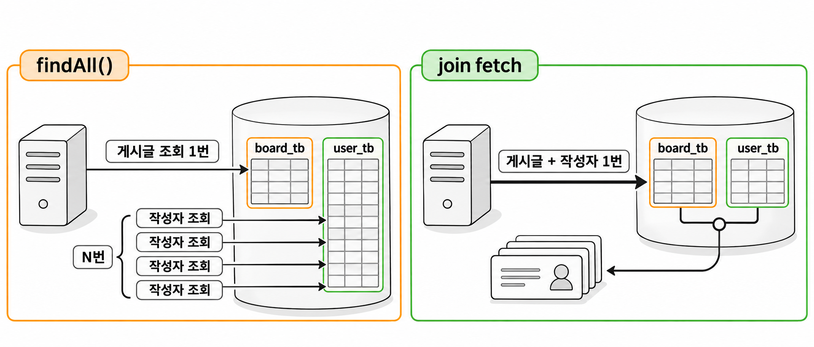
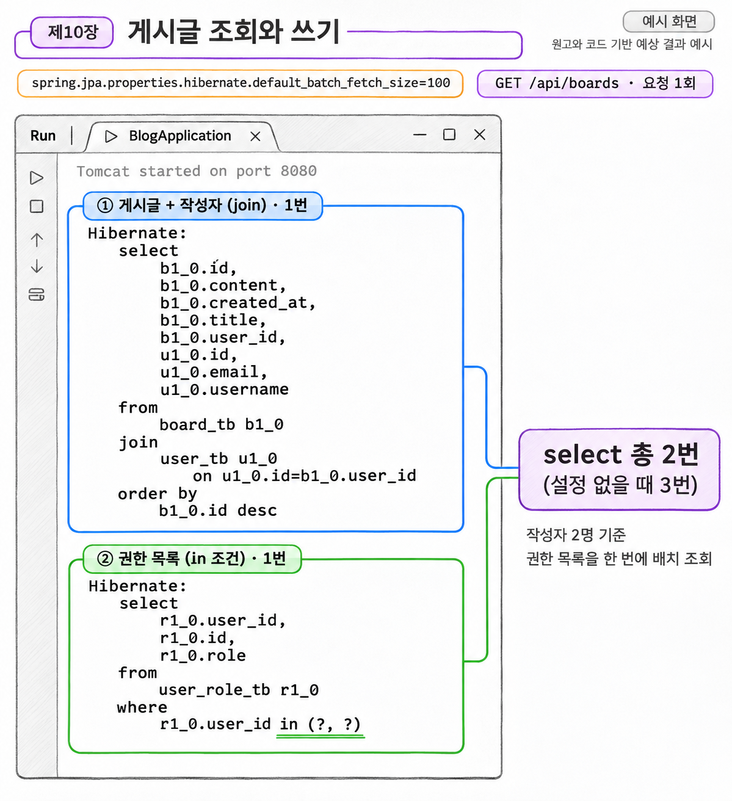
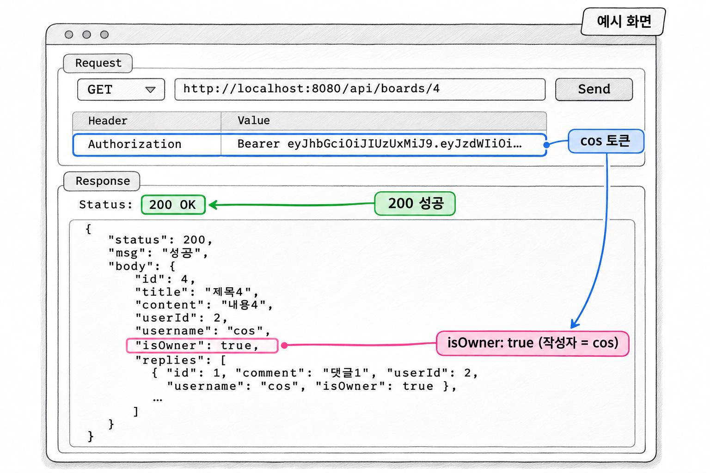

10장. 게시글 조회와 쓰기
이 장에서는 게시글 API 세 개를 만듭니다. 목록 조회와 상세 조회는 누구나 쓸 수 있고, 글쓰기는 로그인한 사용자만 쓸 수 있습니다.
| 메서드 | 주소 | 접근 | 하는 일 |
|---|---|---|---|
| GET | /api/boards | 누구나 | 게시글 목록 조회 |
| GET | /api/boards/{boardId} | 누구나 | 게시글 상세 조회(댓글 포함) |
| POST | /api/boards | 로그인 필요 | 게시글 쓰기 |
URL 규칙은 6장에서 이미 정해 두었습니다. GET /api/boards/**는 permitAll()이고, 나머지 /api/**는 hasAnyRole("USER", "ADMIN")입니다. 그래서 이 장에서는 SecurityConfig를 고치지 않습니다. 대신 두 가지 문제를 다룹니다. 하나는 연관된 엔티티를 가져올 때 쿼리가 몇 번 실행되는지이고, 다른 하나는 누구나 볼 수 있는 주소에서 로그인하지 않은 사용자를 어떻게 처리하는지입니다.
1. BoardRepository
게시글 목록 화면에는 작성자 이름이 필요합니다. 상세 화면에는 작성자와 댓글, 댓글 작성자까지 필요합니다. BoardRepository에는 이 데이터를 한 번의 쿼리로 가져오는 메서드 두 개를 JPQL로 만듭니다.
예제 10-1 — BoardRepository 만들기
이어서: 예제 9-4
파일명: src/main/java/com/newtenco/blog/board/BoardRepository.java
package com.newtenco.blog.board;
import org.springframework.data.jpa.repository.JpaRepository;
import org.springframework.data.jpa.repository.Query;
import org.springframework.data.repository.query.Param;
import java.util.List;
import java.util.Optional;
public interface BoardRepository extends JpaRepository<Board, Integer> {
// 목록: 게시글과 작성자를 한 번의 쿼리로 가져온다 (N+1 방지)
@Query("select b from Board b join fetch b.user order by b.id desc")
List<Board> findAllJoinUser();
// 상세: 게시글 + 작성자 + 댓글 + 댓글 작성자를 한 번에 가져온다
// 댓글은 없을 수도 있으므로 left join
@Query("""
select b from Board b
join fetch b.user
left join fetch b.replies r
left join fetch r.user
where b.id = :boardId
order by r.id
""")
Optional<Board> findByIdJoinUserAndReplies(@Param("boardId") Integer boardId);
}실행 결과
서버를 다시 실행했을 때 오류 없이 시작되면 됩니다. JPQL 문법이 틀렸다면 서버가 시작하면서 쿼리를 검사하고 오류를 냅니다. 그래서 오타는 요청을 보내기 전에 드러납니다.
findAllJoinUser()는 최신 글이 먼저 오도록 order by b.id desc로 정렬합니다. findByIdJoinUserAndReplies()는 게시글이 없을 수도 있으므로 Optional로 돌려줍니다. 텍스트 블록(""")을 쓰면 긴 JPQL을 여러 줄로 나눠 읽기 좋게 쓸 수 있습니다.
1.1 fetch join으로 N+1 막기
2장의 Board 엔티티에서 user 필드는 @ManyToOne(fetch = FetchType.LAZY), 곧 지연 로딩입니다. 게시글을 조회할 때 작성자는 함께 가져오지 않습니다. board.getUser().getUsername()처럼 작성자 값을 처음 꺼낼 때 작성자를 조회하는 쿼리가 따로 실행됩니다.
코드 조각
List<Board> boards = boardRepository.findAll(); // 게시글 조회 1번
for (Board board : boards) {
board.getUser().getUsername(); // 작성자마다 조회가 더 실행될 수 있다
}게시글 N개를 가져오는 쿼리 1번 뒤에 작성자를 가져오는 쿼리가 최대 N번 더 실행됩니다. 이것이 N+1 문제입니다. 이미 영속성 컨텍스트에 올라온 작성자는 다시 조회하지 않으므로, 실제 횟수는 서로 다른 작성자 수만큼입니다. 더미 데이터처럼 작성자가 둘이면 2번이고, 작성자가 모두 다르면 N번입니다.
fetch join은 연관된 엔티티를 같은 SQL 한 번으로 함께 가져오라는 JPQL 문법입니다. join fetch b.user라고 쓰면 Hibernate는 board_tb와 user_tb를 조인한 select를 한 번 실행하고, 작성자까지 채워진 Board를 돌려줍니다.
| 방법 | 실행되는 쿼리 | 게시글이 N개일 때 |
|---|---|---|
findAll() 후 board.getUser().getUsername() | 게시글 1번 + 작성자마다 1번 | 최대 1 + N번 |
join fetch b.user | 게시글과 작성자를 조인해서 1번 | 1번 |

목록 조회는 프런트엔드가 가장 자주 요청하는 API입니다. 게시글이 많아질수록 1 + N번과 1번의 차이가 커지므로, 목록처럼 연관 데이터가 꼭 필요한 조회는 처음부터 fetch join으로 만듭니다.
1.2 상세보기 쿼리의 join과 left join
상세보기 쿼리는 연관 대상 세 개를 fetch join합니다. 작성자에는 join을, 댓글과 댓글 작성자에는 left join을 씁니다.
일반 join(inner join)은 양쪽 테이블에 짝이 되는 행이 모두 있을 때만 결과에 남깁니다. left join은 왼쪽 행을 모두 남기고, 오른쪽에 짝이 없으면 그 칸을 비워 둡니다.
| 연관 대상 | 사용한 조인 | 이유 |
|---|---|---|
b.user (작성자) | join fetch | 게시글에는 작성자가 반드시 있습니다 |
b.replies (댓글) | left join fetch | 댓글이 없는 게시글도 조회되어야 합니다 |
r.user (댓글 작성자) | left join fetch | 댓글이 없으면 댓글 작성자도 없습니다 |
더미 데이터에서 1번 게시글에는 댓글이 없습니다. 댓글에 일반 join을 쓰면 1번 게시글은 결과에서 빠집니다. Optional이 비어 있으므로 서비스는 "게시글을 찾을 수 없습니다"라는 404를 응답합니다. 게시글이 있는데도 없다고 응답하는 셈입니다. left join으로 바꾸면 1번 게시글은 그대로 조회되고 replies만 빈 목록이 됩니다.
r.user도 같은 이유로 left join입니다. 댓글이 없는 행에서는 r이 비어 있습니다. 여기서 r.user를 일반 join으로 걸면, left join으로 남겨 둔 1번 게시글의 행이 다시 걸러집니다.
마지막의 order by r.id는 댓글을 작성한 순서대로 정렬합니다. 화면에서 댓글은 보통 오래된 것부터 아래로 쌓이기 때문입니다.
1.3 권한 목록 배치 조회 설정
fetch join으로 게시글과 작성자는 한 번에 가져왔습니다. 그런데 서버 콘솔의 SQL 로그를 보면 select가 더 실행됩니다. 2장의 User 엔티티에서 권한 목록 roles가 @ElementCollection(fetch = FetchType.EAGER)이기 때문입니다.
EAGER 컬렉션이라도 JPQL로 조회하면 같은 SQL에서 함께 가져오지 않습니다. Hibernate는 JPQL 결과로 User를 만든 뒤, roles를 채우는 select를 작성자마다 따로 실행합니다. 작성자가 많아지면 여기서 다시 N+1 문제가 생깁니다.
배치 조회는 따로 실행될 조회를 모아 where user_id in (1, 2, ...)처럼 한 번에 실행하는 Hibernate 기능입니다. default_batch_fetch_size는 한 번에 묶을 개수의 최댓값입니다. 따로 실행되는 연관 엔티티와 컬렉션 조회에 모두 적용되므로, 엔티티마다 설정하지 않고 설정 파일에 한 줄만 추가합니다.
예제 10-2 — 배치 조회 설정 추가하기
이어서: 예제 1-2
파일명: src/main/resources/application-dev.properties
# ===== Server =====
server.port=8080
server.servlet.encoding.charset=UTF-8
server.servlet.encoding.force=true
# ===== H2 Datasource (메모리 모드: 서버를 끄면 데이터가 사라짐) =====
spring.datasource.driver-class-name=org.h2.Driver
spring.datasource.url=jdbc:h2:mem:test
spring.datasource.username=sa
spring.datasource.password=
spring.h2.console.enabled=true
# ===== JPA / Hibernate =====
# create: 실행할 때마다 테이블을 새로 만든다 (개발 단계 전용, 운영에서 사용 금지)
spring.jpa.hibernate.ddl-auto=create
spring.jpa.show-sql=true
spring.jpa.properties.hibernate.format_sql=true
spring.jpa.open-in-view=false
# 연관 엔티티, 컬렉션을 나중에 가져올 때 where id in (...) 으로 묶어서 한 번에 조회한다
spring.jpa.properties.hibernate.default_batch_fetch_size=100
# ===== SQL Init (data.sql) =====
spring.sql.init.data-locations=classpath:db/data.sql
# 테이블 생성(JPA) 이후에 data.sql 을 실행한다
spring.jpa.defer-datasource-initialization=true
# ===== Logging Level =====
logging.level.com.newtenco.blog=DEBUG
# ===== CORS Allow (콤마로 여러 개 지정 가능) =====
# chrome-extension://* 는 Talend API Tester 같은 크롬 확장 프로그램의 요청을 허용한다
app.cors.allowed-origins=http://localhost:3000,http://localhost:5173,chrome-extension://*실행 결과
이 설정의 효과는 3절의 서비스와 컨트롤러까지 만든 뒤 GET /api/boards를 한 번 요청하면 볼 수 있습니다. 서버 콘솔의 SQL 로그에서 select 개수를 세어 보면 다음과 같습니다.
| 설정 | GET /api/boards 1회 요청 시 select 수 (작성자 2명) |
|---|---|
| 없음 | 3번 (게시글+작성자 1번, 권한 목록 2번) |
default_batch_fetch_size=100 | 2번 (게시글+작성자 1번, 권한 목록 where user_id in (...) 1번) |

생성형 예시 · 실제 실행 안 함
같은 파일의 spring.jpa.open-in-view=false 설정도 함께 기억해 둡니다. 이 설정으로 꺼 두면 서비스의 트랜잭션이 끝난 뒤에는 지연 로딩을 쓸 수 없습니다. 그래서 엔티티를 DTO로 바꾸는 일은 트랜잭션 안, 곧 서비스에서 끝냅니다.
2. 요청·응답 DTO
2.1 목록 DTO와 상세 DTO
요청 DTO는 글쓰기에 쓰는 SaveDTO 하나입니다. 7장의 JoinDTO처럼 record에 검증 어노테이션을 붙입니다. 최대 길이는 Board 엔티티의 컬럼 길이(title 100, content 1000)와 맞춥니다. DTO에서 길이를 먼저 검사하지 않으면 긴 값이 DB까지 내려가서 500 오류로 끝납니다.
예제 10-3 — 게시글 요청 DTO 만들기
파일명: src/main/java/com/newtenco/blog/board/BoardRequest.java
package com.newtenco.blog.board;
import com.newtenco.blog.user.User;
import jakarta.validation.constraints.NotBlank;
import jakarta.validation.constraints.Size;
public class BoardRequest {
// 게시글 쓰기: {"title":"제목","content":"내용"}
public record SaveDTO(
@NotBlank(message = "제목을 입력해주세요")
@Size(max = 100, message = "제목은 100자 이하로 입력해주세요")
String title,
@NotBlank(message = "내용을 입력해주세요")
@Size(max = 1000, message = "내용은 1000자 이하로 입력해주세요")
String content) {
public Board toEntity(User user) {
return Board.builder()
.title(title)
.content(content)
.user(user)
.build();
}
}
}요청 본문에는 작성자 정보가 없습니다. toEntity()가 작성자를 매개변수로 받는 이유입니다. 작성자는 클라이언트가 보낸 값이 아니라 토큰에서 복원한 사용자로 정합니다. 본문으로 userId를 받으면 다른 사람 이름으로 글을 쓸 수 있게 되기 때문입니다. 이 클래스에는 11장에서 수정 요청 DTO를 추가합니다.
응답 DTO는 화면마다 필요한 값이 달라서 두 개로 나눕니다.
예제 10-4 — 게시글 응답 DTO 만들기
파일명: src/main/java/com/newtenco/blog/board/BoardResponse.java
package com.newtenco.blog.board;
import com.newtenco.blog.reply.Reply;
import java.util.List;
public class BoardResponse {
// 목록, 쓰기, 수정 정보, 수정 응답에 함께 쓰는 DTO
public record DTO(Integer id, String title, String content, String username, String createdAt) {
public DTO(Board board) {
this(board.getId(),
board.getTitle(),
board.getContent(),
board.getUser().getUsername(),
board.getCreatedAt() == null ? null : board.getCreatedAt().toString());
}
}
// 상세보기 DTO (댓글 목록 포함)
// sessionUserId 는 로그인하지 않았으면 null 이다
public record DetailDTO(Integer id, String title, String content,
Integer userId, String username, boolean isOwner,
List<ReplyDTO> replies) {
public DetailDTO(Board board, Integer sessionUserId) {
this(board.getId(),
board.getTitle(),
board.getContent(),
board.getUser().getId(),
board.getUser().getUsername(),
board.getUser().getId().equals(sessionUserId),
board.getReplies().stream()
.map(reply -> new ReplyDTO(reply, sessionUserId))
.toList());
}
public record ReplyDTO(Integer id, String comment, Integer userId, String username, boolean isOwner) {
public ReplyDTO(Reply reply, Integer sessionUserId) {
this(reply.getId(),
reply.getComment(),
reply.getUser().getId(),
reply.getUser().getUsername(),
reply.getUser().getId().equals(sessionUserId));
}
}
}
}| DTO | 쓰는 곳 | 담는 값 |
|---|---|---|
DTO | 목록, 쓰기 (11장의 수정 정보, 수정) | 작성자는 username만 |
DetailDTO | 상세보기 | 작성자 id, 댓글 목록, isOwner |
DetailDTO.ReplyDTO | 상세보기의 댓글 | 댓글마다 작성자 id와 isOwner |
두 DTO 모두 엔티티를 받는 생성자를 두었으므로, 서비스에서는 new BoardResponse.DTO(board)처럼 한 줄로 바꿉니다. 응답에 User 엔티티를 그대로 넣지 않고 username과 id만 꺼내 담는다는 점이 중요합니다. 엔티티를 그대로 담으면 7장에서 응답 DTO로 뺀 비밀번호가 다시 응답에 실립니다. Board와 Reply가 서로를 참조하는 구조라 JSON 변환이 끝나지 않는 문제도 생깁니다.
createdAt은 Timestamp를 toString()으로 바꾼 문자열입니다. 저장할 때 @CreationTimestamp가 값을 채우지만, 값이 없더라도 NullPointerException이 나지 않도록 null인지 먼저 확인합니다.
2.2 isOwner와 로그인하지 않은 사용자
isOwner는 "이 요청을 보낸 사람이 작성자인가"를 담은 값입니다. 프런트엔드는 이 값으로 수정·삭제 버튼을 보여 줄지 정합니다. 서버가 판단한 결과를 보내므로, 프런트엔드는 토큰을 해석해서 작성자 id와 비교할 필요가 없습니다.
isOwner는 버튼 표시용일 뿐 권한 검사가 아닙니다. 실제로 수정·삭제를 막는 일은 11장의 서비스 코드가 맡습니다.
상세보기는 누구나 요청할 수 있으므로 DetailDTO가 받는 sessionUserId는 null일 수 있습니다. 이때는 equals()를 어느 쪽에서 부르는지에 따라 결과가 달라집니다.
코드 조각
board.getUser().getId().equals(sessionUserId); // sessionUserId 가 null 이면 false
sessionUserId.equals(board.getUser().getId()); // sessionUserId 가 null 이면 NullPointerException| 코드 | sessionUserId가 null일 때 |
|---|---|
board.getUser().getId().equals(sessionUserId) | false (equals()에 null을 넘기면 false) |
sessionUserId.equals(board.getUser().getId()) | NullPointerException → 500 |
두 번째 줄은 null에서 메서드를 호출하므로 예외가 납니다. 그러면 4장의 GlobalExceptionHandler가 500 "관리자에게 문의하세요"로 응답하고, 로그인하지 않은 사용자는 글을 볼 수 없게 됩니다. 그래서 값이 반드시 있는 쪽인 DB의 작성자 id에서 equals()를 호출합니다.
==로 비교하지 않는 데도 이유가 있습니다. Integer는 객체라서 ==는 값이 아니라 같은 객체인지를 비교합니다. 작은 수에서는 우연히 맞다가 128 이상에서 틀리는 버그가 생기므로 equals()를 씁니다.
3. 서비스와 컨트롤러
서비스는 9장과 같이 클래스에 @Transactional(readOnly = true)를 두고, 데이터를 바꾸는 메서드에만 @Transactional을 따로 붙입니다.
예제 10-5 — 게시글 서비스와 컨트롤러 만들기
이어서: 예제 10-4
파일명: src/main/java/com/newtenco/blog/board/BoardService.java
package com.newtenco.blog.board;
import com.newtenco.blog.core.handler.errors.NotFoundException;
import com.newtenco.blog.user.User;
import lombok.RequiredArgsConstructor;
import org.springframework.stereotype.Service;
import org.springframework.transaction.annotation.Transactional;
import java.util.List;
@Transactional(readOnly = true)
@RequiredArgsConstructor
@Service
public class BoardService {
private final BoardRepository boardRepository;
public List<BoardResponse.DTO> 게시글목록() {
return boardRepository.findAllJoinUser().stream()
.map(BoardResponse.DTO::new)
.toList();
}
@Transactional
public BoardResponse.DTO 게시글쓰기(BoardRequest.SaveDTO reqDTO, User sessionUser) {
Board savedBoard = boardRepository.save(reqDTO.toEntity(sessionUser));
return new BoardResponse.DTO(savedBoard);
}
public BoardResponse.DetailDTO 게시글상세(Integer boardId, Integer sessionUserId) {
Board board = boardRepository.findByIdJoinUserAndReplies(boardId)
.orElseThrow(() -> new NotFoundException("게시글을 찾을 수 없습니다"));
return new BoardResponse.DetailDTO(board, sessionUserId);
}
}파일명: src/main/java/com/newtenco/blog/board/BoardController.java
package com.newtenco.blog.board;
import com.newtenco.blog.core.util.Resp;
import com.newtenco.blog.user.User;
import jakarta.validation.Valid;
import lombok.RequiredArgsConstructor;
import org.springframework.http.ResponseEntity;
import org.springframework.security.core.annotation.AuthenticationPrincipal;
import org.springframework.web.bind.annotation.*;
@RequestMapping("/api/boards")
@RequiredArgsConstructor
@RestController
public class BoardController {
private final BoardService boardService;
// GET /api/boards : 누구나
@GetMapping
public ResponseEntity<?> findAll() {
return Resp.ok(boardService.게시글목록());
}
// POST /api/boards : 로그인 필요
@PostMapping
public ResponseEntity<?> save(@AuthenticationPrincipal User sessionUser,
@Valid @RequestBody BoardRequest.SaveDTO reqDTO) {
return Resp.ok(boardService.게시글쓰기(reqDTO, sessionUser));
}
// GET /api/boards/1 : 누구나 (로그인하지 않았으면 sessionUser 는 null)
@GetMapping("/{boardId}")
public ResponseEntity<?> findById(@AuthenticationPrincipal User sessionUser,
@PathVariable("boardId") Integer boardId) {
Integer sessionUserId = (sessionUser == null) ? null : sessionUser.getId();
return Resp.ok(boardService.게시글상세(boardId, sessionUserId));
}
}실행 결과
서버를 다시 실행한 뒤 Talend API Tester로 GET http://localhost:8080/api/boards를 토큰 없이 요청하면 200 응답이 옵니다. 응답 body에는 게시글 5개가 5번부터 1번 순서로 들어 있습니다. 응답 전체와 나머지 요청은 4절에서 확인합니다.
없는 게시글 번호로 요청하면 서비스가 NotFoundException을 던지고, GlobalExceptionHandler가 이를 404로 바꿉니다. /api/boards/abc처럼 숫자가 아닌 값에는 9장에서 추가한 처리기가 400으로 응답합니다.
3.1 로그인 여부에 따른 sessionUser
findById()의 sessionUser는 요청에 따라 값이 달라집니다. 같은 주소라도 토큰을 보냈는지에 따라 컨트롤러가 받는 값이 바뀝니다.
| 요청 | URL 규칙 | sessionUser |
|---|---|---|
GET /api/boards/4 (토큰 없음) | permitAll()이라 통과 | null |
GET /api/boards/4 (cos 토큰) | permitAll()이라 통과 | 토큰에서 복원한 cos |
POST /api/boards (토큰 없음) | /api/** 규칙에 걸려 401 | 컨트롤러까지 오지 않음 |
토큰이 없을 때 sessionUser가 null이 되는 이유는 5장의 JwtAuthorizationFilter에 있습니다. 이 필터는 토큰이 없으면 SecurityContextHolder에 아무것도 넣지 않고 다음 필터로 넘깁니다. 그러면 시큐리티는 이 요청을 익명 사용자로 처리합니다. 익명 사용자의 principal은 User가 아니므로 @AuthenticationPrincipal User에는 null이 들어옵니다.
반대로 permitAll() 주소라도 유효한 토큰이 오면 필터는 인증 정보를 넣습니다. permitAll()은 "검사 없이 통과시킨다"는 뜻이지 "토큰을 무시한다"는 뜻이 아닙니다. 그래서 같은 상세보기라도 로그인한 사람은 자기 기준의 isOwner를 받습니다.
컨트롤러는 null 처리를 한 줄로 끝내고, 서비스에는 User 대신 Integer sessionUserId만 넘깁니다. 상세보기에 필요한 것은 작성자 id와 비교할 숫자뿐이기 때문입니다.
save()에는 null 처리가 없습니다. POST /api/boards는 URL 규칙에서 로그인한 사용자만 통과시키므로, 컨트롤러에 도착한 요청에는 sessionUser가 항상 있습니다. 9장에서 본 두 단계 인가 가운데 1단계가 이 보장을 맡습니다.
3.2 토큰에서 복원한 User로 글 쓰기
게시글쓰기()는 컨트롤러가 받은 sessionUser를 그대로 toEntity()에 넘겨 Board의 작성자로 넣습니다. 이 User는 DB에서 조회한 엔티티가 아닙니다. 3장의 JwtUtil.verify()가 토큰 안의 id, username, roles만으로 만든 객체이고, 이메일과 비밀번호는 비어 있습니다.
그래도 글은 정상적으로 저장됩니다. Board를 저장할 때 JPA가 board_tb에 넣는 작성자 정보는 user_id 외래 키 하나뿐이기 때문입니다. JPA는 User 객체에서 id만 꺼내 user_id 컬럼에 넣습니다. 작성자 정보를 바꾸는 것이 아니므로 작성자를 다시 조회하지 않아도 되고, SQL 로그에도 board_tb의 insert만 보입니다.
응답 DTO의 username도 같은 User 객체에서 꺼냅니다. 토큰에 username이 들어 있으므로 값이 비지 않습니다. 반대로 이메일처럼 토큰에 없는 값은 이 객체에서 꺼낼 수 없습니다. 이럴 때는 8장처럼 id로 DB를 다시 조회합니다.
| 필요한 것 | 토큰에서 복원한 User로 충분한가 |
|---|---|
| 작성자 연결(외래 키) | 충분합니다. id만 쓰입니다 |
응답의 username | 충분합니다. 토큰에 들어 있습니다 |
| 이메일 등 토큰에 없는 값 | 부족합니다. DB를 다시 조회해야 합니다 |
4. Talend API Tester로 확인하기
서버를 다시 실행하면 더미 데이터도 처음 상태로 돌아갑니다. 확인에 쓰는 데이터는 다음과 같습니다.
| 게시글 | 작성자 | 댓글 |
|---|---|---|
| 1~3번 | ssar (id 1) | 없음 |
| 4번 | cos (id 2) | 댓글1~3, 모두 cos |
| 5번 | cos (id 2) | 댓글4~5, 모두 ssar |
7장처럼 POST /login으로 ssar와 cos의 토큰을 각각 받아 둡니다. 토큰을 보낼 때는 8장처럼 Authorization 헤더에 Bearer 까지 포함한 값을 그대로 넣습니다. 9장의 시나리오 기능을 쓰면 토큰을 매번 붙여 넣지 않아도 됩니다.
1) 목록 조회
토큰 없이 GET http://localhost:8080/api/boards를 요청합니다.
실행 결과
200
{"status":200,"msg":"성공","body":[{"id":5,"title":"제목5","content":"내용5","username":"cos","createdAt":"2026-11-12 10:15:30.123"},{"id":4,"title":"제목4","content":"내용4","username":"cos","createdAt":"2026-11-12 10:15:30.123"},{"id":3,"title":"제목3","content":"내용3","username":"ssar","createdAt":"2026-11-12 10:15:30.122"},{"id":2,"title":"제목2","content":"내용2","username":"ssar","createdAt":"2026-11-12 10:15:30.122"},{"id":1,"title":"제목1","content":"내용1","username":"ssar","createdAt":"2026-11-12 10:15:30.121"}]}createdAt은 data.sql이 실행된 시각이라 실행할 때마다 다릅니다. 서버 콘솔에서 select가 2번 실행되었는지도 함께 확인합니다.
2) 글쓰기
POST http://localhost:8080/api/boards에 Content-Type을 application/json으로 두고 본문을 넣어 요청합니다.
| 토큰 | 본문 | 응답 |
|---|---|---|
| 없음 | {"title":"t","content":"c"} | 401, "로그인 후 이용해주세요" |
| ssar | {"title":"새 글","content":"새 내용"} | 200, 6번 게시글 |
| ssar | {"title":" ","content":"c"} | 400, "title:제목을 입력해주세요" |
토큰 없는 요청은 6장의 RespFilter가 필터 단계에서 401로 응답하므로 컨트롤러가 실행되지 않습니다. 공백만 있는 제목은 @NotBlank에 걸려 400이 됩니다. ssar 토큰으로 정상 본문을 보낸 요청의 응답은 다음과 같습니다.
실행 결과
200
{"status":200,"msg":"성공","body":{"id":6,"title":"새 글","content":"새 내용","username":"ssar","createdAt":"2026-11-12 10:20:41.876"}}목록을 다시 조회하면 6번 게시글이 맨 앞에 나옵니다. 본문에 작성자를 보내지 않았는데도 username이 ssar인 것은 작성자를 토큰에서 정했기 때문입니다.
3) 상세 조회
4번 게시글을 토큰 없이, cos 토큰으로, ssar 토큰으로 한 번씩 요청해서 isOwner를 비교합니다.
| 요청 | 토큰 | 게시글 isOwner | 댓글 isOwner |
|---|---|---|---|
GET /api/boards/4 | 없음 | false | 3개 모두 false |
GET /api/boards/4 | cos | true | 3개 모두 true |
GET /api/boards/4 | ssar | false | 3개 모두 false |
토큰 없이 요청한 응답은 다음과 같습니다.
실행 결과
200
{"status":200,"msg":"성공","body":{"id":4,"title":"제목4","content":"내용4","userId":2,"username":"cos","isOwner":false,"replies":[{"id":1,"comment":"댓글1","userId":2,"username":"cos","isOwner":false},{"id":2,"comment":"댓글2","userId":2,"username":"cos","isOwner":false},{"id":3,"comment":"댓글3","userId":2,"username":"cos","isOwner":false}]}}cos 토큰으로 같은 요청을 보내면 데이터는 같고 isOwner만 모두 true로 바뀝니다. 토큰 없는 요청이 500이 아니라 200으로 끝났다는 점도 확인합니다. 2.2에서 정한 equals() 호출 방향이 지켜졌다는 뜻입니다. ssar 토큰 결과에서는 토큰이 있다는 것만으로 isOwner가 true가 되지 않는다는 것을 알 수 있습니다.

생성형 예시 · 실제 실행 안 함
4) 댓글이 없는 글과 없는 글
| 요청 | 토큰 | 응답 |
|---|---|---|
GET /api/boards/1 | 없음 | 200, "replies":[] |
GET /api/boards/99 | 없음 | 404, "게시글을 찾을 수 없습니다" |
1번 게시글이 404가 아니라 빈 댓글 목록으로 오면 1.2의 left join이 제대로 동작한 것입니다. 99번은 게시글 자체가 없으므로 Optional이 비고, 서비스가 던진 NotFoundException이 404 응답이 됩니다.
실행 결과
200
{"status":200,"msg":"성공","body":{"id":1,"title":"제목1","content":"내용1","userId":1,"username":"ssar","isOwner":false,"replies":[]}}
404
{"status":404,"msg":"게시글을 찾을 수 없습니다","body":null}